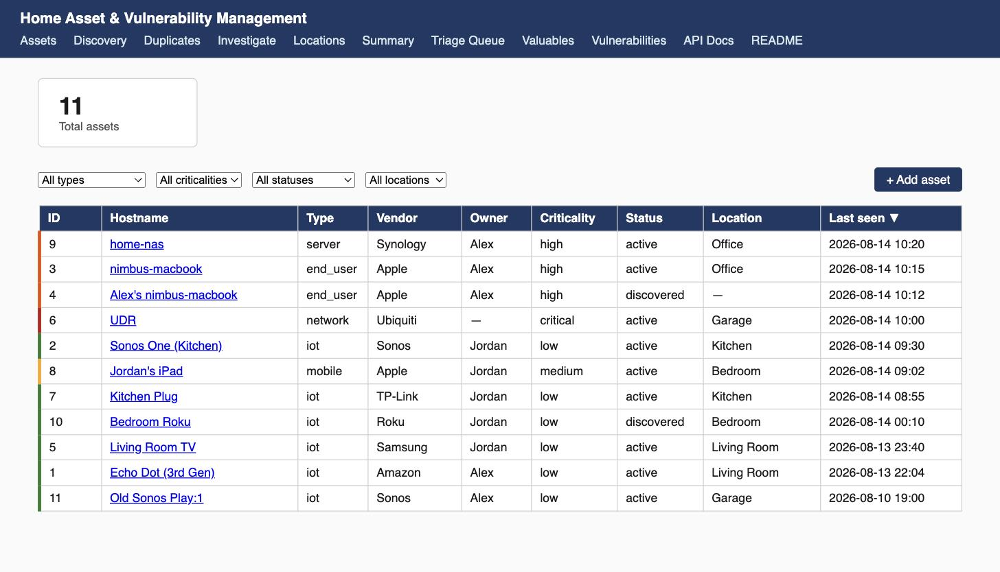
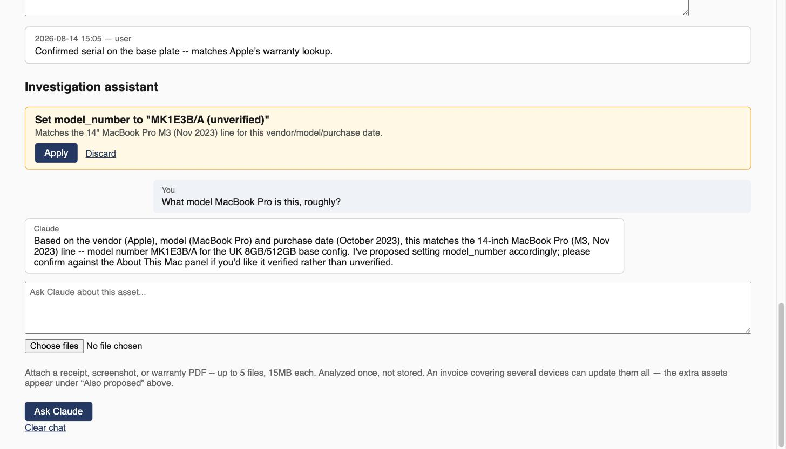
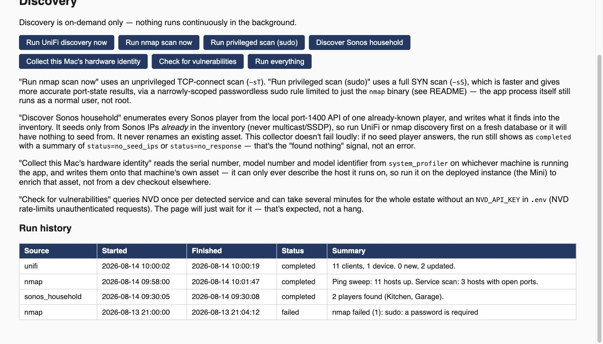
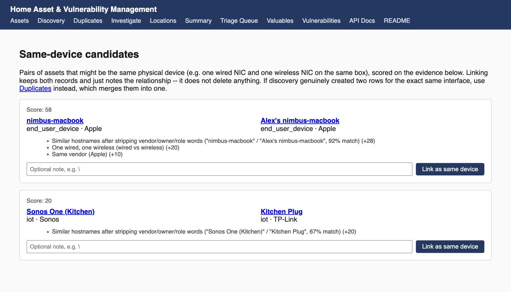

Know what's on your network, what it's worth, and what needs attention — self-hosted, LAN-only, and entirely yours.

Thirty, sixty, maybe a hundred devices by now — and no inventory of any of it.
Smart plugs, speakers, laptops, a NAS, a couple of streaming boxes, whatever the kids' phones are this year. Nobody wrote any of it down. When an insurance claim needs proof of what you owned and what it cost, or a vulnerability disclosure makes you wonder if it affects your gear, there's nothing to check against — just a vague sense of "I think we have one of those."
This app builds and maintains that record automatically, from the network itself — without sending your home inventory anywhere you didn't choose to.
One tool, four connected jobs.
UniFi, nmap, and Sonos collectors find what's actually on the network, on demand — nothing scans continuously in the background.
Vendor, model, serial, purchase price, warranty, owner, location — a proper CMDB-style record, not a spreadsheet.
New-for-old replacement values, computed and kept current automatically — the figure your contents policy actually needs.
Detected service versions checked against the NVD, FIRST EPSS, and CISA's Known Exploited Vulnerabilities catalogue.
Ask it questions, hand it a receipt — every suggested change is a draft you explicitly approve. It can't edit your inventory on its own.
Links a device's wired and wireless NICs non-destructively; separately, a dedicated page merges genuine duplicate rows.
Four steps, and you're always the one who approves a change.
Trigger a UniFi, nmap, or Sonos scan whenever you want.
Devices are reconciled and matched across sources automatically.
Every AI-suggested change waits as a draft until you click Apply.
Valuations, warranties, and vulnerability findings stay current.
Captured from fabricated demo data — no real household inventory appears anywhere on this site.



main must be signed — enforced server-side with no bypass, even for the repo owner. History can't be force-pushed or deleted either.Stated upfront, on purpose — better to know now than after setup.
The short version. The README has the full walkthrough.
brew install colima docker docker-compose nmap awscli
brew services start colima
git clone https://github.com/rohitafish/home-asset-manager.git
cd home-asset-manager
python3 -m venv .venv && source .venv/bin/activate
pip install -r requirements.txt
cp .env.example .env # then set APP_ADMIN_PASSWORD, UNIFI_*, SCAN_SUBNETS
docker compose up -d db
alembic upgrade head
uvicorn app.main:app --reload